Nacos安装指南
1.Windows安装
开发阶段采用单机安装即可。
1.1.下载安装包
在Nacos的GitHub页面，提供有下载链接，可以下载编译好的Nacos服务端或者源代码：
GitHub主页：https://github.com/alibaba/nacos
GitHub的Release下载页：https://github.com/alibaba/nacos/releases
如图：

本课程采用1.4.1.版本的Nacos，课前资料已经准备了安装包：
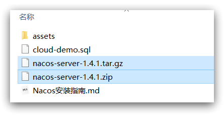
windows版本使用nacos-server-1.4.1.zip包即可。
1.2.解压
将这个包解压到任意非中文目录下，如图：
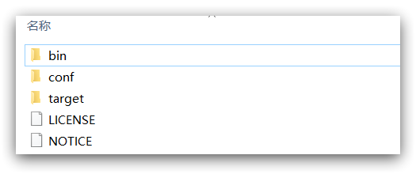
目录说明：
- bin：启动脚本
- conf：配置文件
1.3.端口配置
Nacos的默认端口是8848，如果你电脑上的其它进程占用了8848端口，请先尝试关闭该进程。
如果无法关闭占用8848端口的进程，也可以进入nacos的conf目录，修改配置文件中的端口：
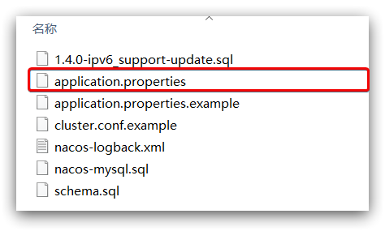
修改其中的内容：
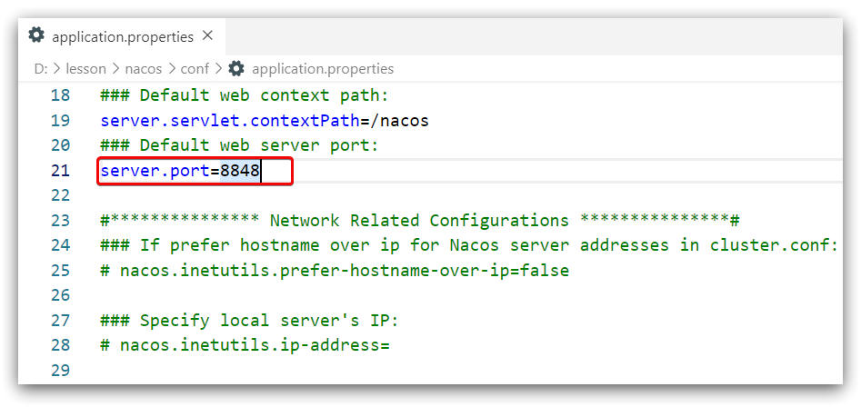
1.4.启动
启动非常简单，进入bin目录，结构如下：
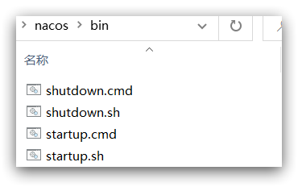
然后执行命令即可：
windows命令：
1
startup.cmd -m standalone
执行后的效果如图：
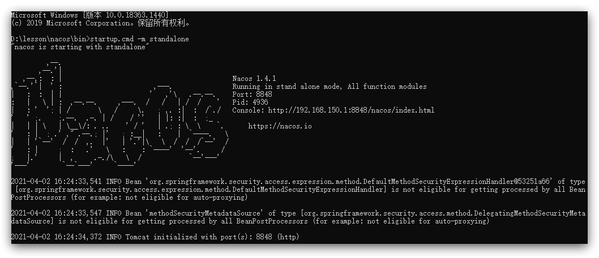
1.5.访问
在浏览器输入地址：http://127.0.0.1:8848/nacos即可：
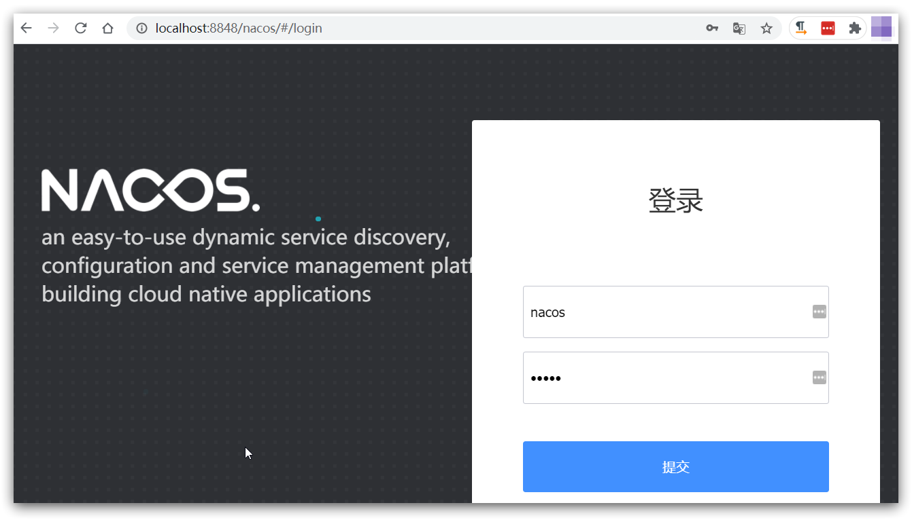
默认的账号和密码都是nacos，进入后：
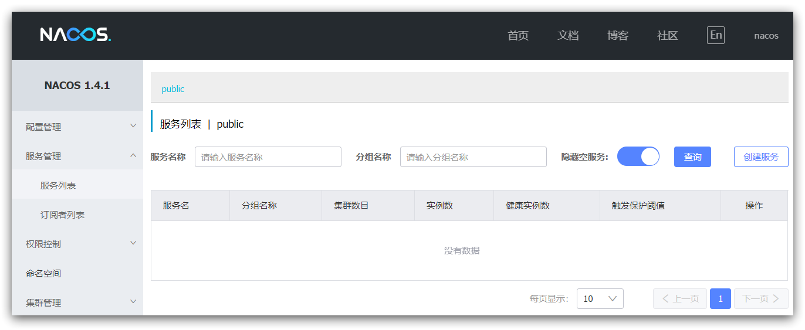
2.Linux安装
Linux或者Mac安装方式与Windows类似。
2.1.安装JDK
Nacos依赖于JDK运行，索引Linux上也需要安装JDK才行。
上传jdk安装包：
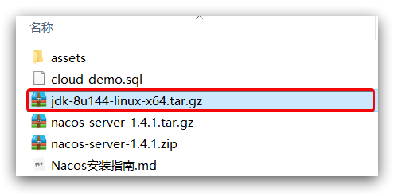
上传到某个目录，例如：/usr/local/
然后解压缩：
1 | tar -xvf jdk-8u144-linux-x64.tar.gz |
然后重命名为java
配置环境变量：
1 | export JAVA_HOME=/usr/local/java |
设置环境变量：
1 | source /etc/profile |
2.2.上传安装包
如图：
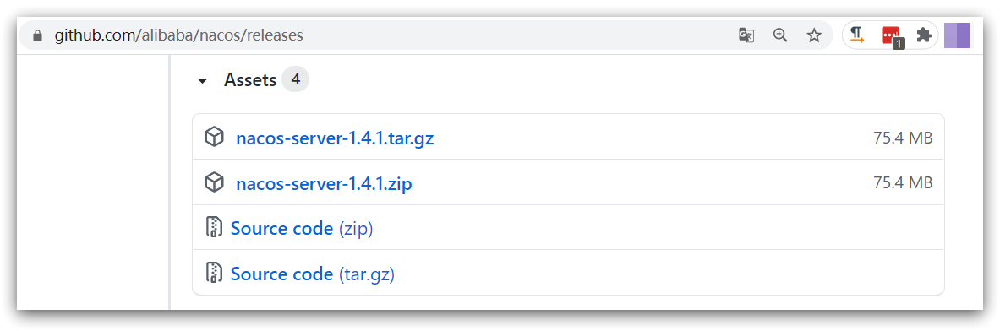
也可以直接使用课前资料中的tar.gz：

上传到Linux服务器的某个目录，例如/usr/local/src目录下：
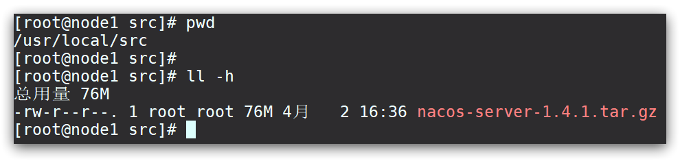
2.3.解压
命令解压缩安装包：
1 | tar -xvf nacos-server-1.4.1.tar.gz |
然后删除安装包：
1 | rm -rf nacos-server-1.4.1.tar.gz |
目录中最终样式：
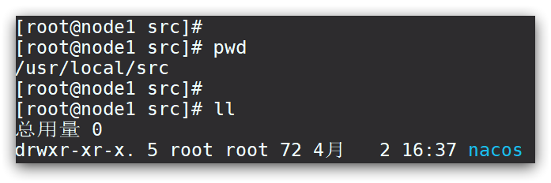
目录内部：
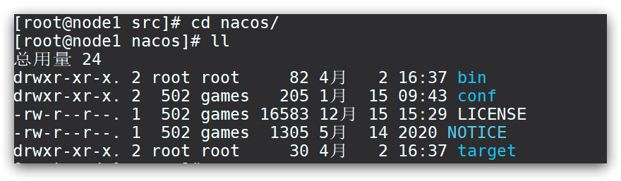
2.4.端口配置
与windows中类似
2.5.启动
在nacos/bin目录中，输入命令启动Nacos：
1 | sh startup.sh -m standalone |
3.Nacos的依赖
父工程：
1 | <dependency> |
客户端：
1 | <!-- nacos客户端依赖包 --> |